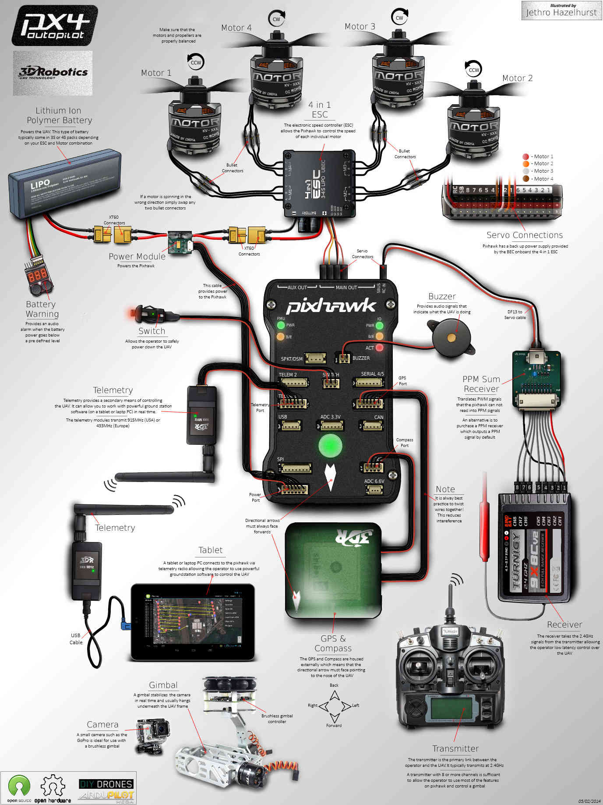

Advanced Pixhawk Quadcopter Wiring Chart¶
Jethro Hazelhurst produced this magnificent Pixhawk wiring chart for a Quadcopter for us. (Other autopilots will be wired similarly)
(Control Scroll wheel will let you zoom in on the image below!)
{kind=link}
This chart Illustrates a quadcopter with a variety of options.¶
A 4 in 1 ESC is used instead of individual ESCs reducing EMF and allowing a neater installation and no power distribution board.
Default actual Motor number to Quadcopter frame location is shown below and will require appropriate signal and motor wire routing. The assignment of outputs to motor numbers can be changed by adjusting the
SERVOx_FUNCTIONvalues for each individual “x” output of the autopilot. Note that the AUX1-6 outputs shown below correspond to SERVO9 - SERVO14, respectively.
{kind=link}
A 3DR PPM-Sum encoder with conventional receiver is illustrated. Any ArduPilot compatible receiver can be used. See Radio Control Systems for more options.
Generally a 3S or 4S LiPo battery is appropriate for a Quadcopter and the XT60 connectors shown are a reliable choice.
An optional battery warning indicator can provide quick battery status and provide an audible warning when nearby.
Optional 3DR telemetry radios may be connected to your autopilot and tablet or laptop to permit real time monitoring and operation.
A (GCS (Ground Control Station) program like Mission Planner, AndroPilot or DroidPlanner provides in flight information and control.
An optional GoPro camera and brushless gimbal are illustrated and can provide very high quality photo and video results.
It is quite reasonable to use a GoPro camera and brushless gimbal on 400 and larger Quadcopters.
Brushless camera gimbals perform more smoothly and adequately than the older servo type gimbals.
The brushless gimbal illustrated above has an anti-vibration mount which is important for good photo results.
For cameras larger than GoPro or “Sport” types, a larger QuadCopter, HexaCopter or OctoCopter should be used.
You could also install an optional FPV (First Person View) video system but it is not shown in the illustration above.
An FPV system consists of a tiny video camera and transmitter on the copter plus a receiver and video goggles or an LCD screen.
Almost any size Quadcopter can support a First Person View system.
An optional OSD (On Screen Display) can add a video heads up display of current in flight conditions to your FPV flight display.
The telemetry, camera, gimbal, FPV and OSD options mentioned above can be combined as you wish for your copter, but start simple.